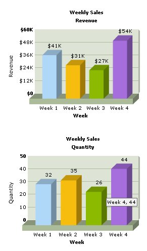

FusionCharts PHP Class API > Creating multiple charts in one page |
While developing web pages or applications, we may need to display multiple charts on the same page. For example, reporting Weekly Sales Qunatity along with Revenue gives us a better insight. Let's see how we can accomplish this using FusionCharts PHP Class. The code below generates two Column 3D charts on the same page. |
Before you go further with this page, we recommend you to please see the previous page "Creating First Chart " as we start off from concepts explained in that page. |
<?php # Include FusionCharts PHP Class //---------- Configuring Second Chart ----------// # Set chart attributes ?> <? # Render Second Chart
</body> |
Let's go through the steps involved in this code:
|
| Please go through FusionCharts PHP Class API Reference section to know more about the functions used in the above code. |
| Here is the output. Both the charts have been rendered on same page. |
|  |